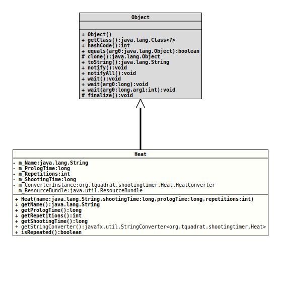

java.lang.Object
org.tquadrat.shootingtimer.Heat
@ClassVersion(sourceVersion="$Id: HexUtils.java 747 2020-12-01 12:40:38Z tquadrat $")
@API(status=STABLE,
since="0.1.0")
public class Heat
extends Object
A heat is a part of a program for a shooting discipline. For the
purpose of the Shooting Timer application, it defines the prolog time and
the shooting time.
- Author:
- Thomas Thrien (thomas.thrien@tquadrat.org)
- Version:
- $Id: HexUtils.java 747 2020-12-01 12:40:38Z tquadrat $
- Since:
- 0.1.0
- UML Diagram
-

UML Diagram for "org.tquadrat.shootingtimer.Heat"
{kind=link}
-
Nested Class Summary
Nested ClassesModifier and TypeClassDescriptionprivate static classThe implementation ofjavafx.util.StringConverterfor instances of this class. -
Field Summary
FieldsModifier and TypeFieldDescriptionprivate static final Heat.HeatConverterThe one and only instance for the string converter.private final StringThe name of the heat.private final longThe prolog time in milliseconds.private final intThe number of times that the timings are to be repeated within a single heat.private static final ResourceBundleThe resource bundle with the names.private final longThe shooting time in milliseconds. -
Constructor Summary
Constructors -
Method Summary
Modifier and TypeMethodDescriptionfinal StringgetName()Returns the name for this heat.final longReturns the prolog time for this heat-final intThe number of repetitions for these timings.final longThe shooting time for this heat.static final StringConverter<Heat>Returns the implementation ofStringConverterfor instances of this class.final booleanReturns whether this heat has repetitions.
-
Field Details
-
m_Name
The name of the heat. -
m_PrologTime
The prolog time in milliseconds. -
m_Repetitions
The number of times that the timings are to be repeated within a single heat. -
m_ShootingTime
The shooting time in milliseconds. -
m_ConverterInstance
The one and only instance for the string converter. -
m_ResourceBundle
The resource bundle with the names.
-
-
Constructor Details
-
Heat
Creates a newHeatinstance.- Parameters:
name- The name of the heat, respectively the resource bundle key for this name.shootingTime- The shooting time in milliseconds.prologTime- The prolog time in milliseconds.repetitions- The number of times that the timings are to be repeated within a single heat.
-
-
Method Details
-
getName
Returns the name for this heat.- Returns:
- The name.
-
getPrologTime
Returns the prolog time for this heat-- Returns:
- The prolog time in milliseconds.
-
getRepetitions
The number of repetitions for these timings.- Returns:
- The repetitions.
-
getShootingTime
The shooting time for this heat.- Returns:
- The shooting time in milliseconds.
-
getStringConverter
Returns the implementation ofStringConverterfor instances of this class.- Returns:
- The string converter.
-
isRepeated
Returns whether this heat has repetitions.- Returns:
trueif the heat has repetitions,falseotherwise.
-